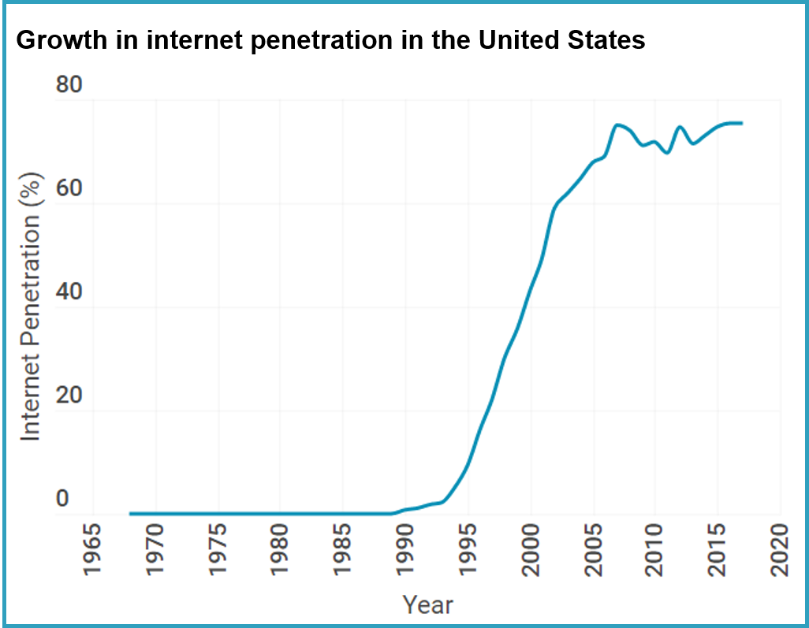

Data Stories: Final Project
Internetting: What are you doing on the internet anyway?
Part I: Project Proposal. Submitted: Wednesday, July 24, 2019
Project Outline:
Figure 1: Project outline created from Shorthand template

Figure 2: Story Arc

Intial Sketches:
Figure 3: Sketches for Data Visualization charts

I made these sketches to go along with my story arc.
Initially, I intend to start off discussing the beginnings of the internet, the growth in usage and the number of pages pages. This growth can be shown with a chart similar to Figure 3.1 (as labeled in my sketches). Data used should show exponential growth in these metrics. I sketched line and bar charts in one figure to show these trends over time but for the final deliverable, I may separate out these figures.
Next, my story will go into all the benefits (e.g. connection, increased access to information, innovation and so on) of the internet and how we are spending a lot more time on the internet (chart shown in Figure 3.1 and Figure 3.2). Next I'll go into how trends in internet usage has changed over time (Figure 3.3). Figure 3.7 is another option to show the trends in internet usage. This leads me to the cons of the internet. No charts have been planned for this section at this time.
Figure 3.4 shows a huge dollar amount to trigger a reaction from the reaction. This is the valley of the story, when users realize how much their time and attention is monetized. Figure 3.5 shows how much of internet traffic is attributed to big tech companies that profit enormously from keeping us on the internet.
My story goes on to the call to action. We need to be more aware of how we're spending our time and how our time on the internet affects internal stability, happiness. Figure 6 shows a negative correlation between amount of internet usage and health and wellness. Ideally, data should show a negative correlation between these metrics or some other indicator. Finally, I wrap up my story by discussing additional benefits to reducing internet usage.
Data:
For this project, I intend to use publicly available data and statistics on internet history, usage, search trends and personal data on internet usage.
(1) My google chrome browsing history on my laptop and mobile phone. I thought it'd be interesting to use my data to see how I'm spending my time on the internet and see how it compares to reported statistics for the average user. I intend to categorize browsing history to make data usable.
(2)Mobile apps and usage metrics (if available) on my mobile phone. I intend to get the same value out of this data as (1) above.
(3) Google search trends found here. I can use this data to identify trends in Google searches to see how people are using the internet and see how searches are changing over time.
(4) Internet World Statistics found here
(5) Digital Trends 2019 found here
(6) Relationship between internet use and depression/sickness/dumbness/ignorance found here
Presentation method and medium:
For the final deliverable, I will use Shorthand to present findings from my analysis. For the final presentation, I will consider my findings and build visuals around 1-2 impactful insights.
Part II: Wireframes and user research. Submitted: Wednesday, July 31, 2019
Initial wireframe
User Research Protocol
Target Audience: The target audience for this project is for heavy internet users. How would do I define heavy? They have at least 2 social media accounts, communicate primarily over the internet and not mobile networks and spend at least 20 hours a week on an internet connected device.
Students are a great group that meet this requirement. To keep survey sample heterogenous, I will talk to internet users from different generations because the internet has shaped these different generations in different ways.
Representative Individuals: Because of the penetration of the internet and the subject of the project,
Interview Script: Hey, I'm working on this project for a data that tries to understand more about how people are using the internet. I'm working on the outline of the final part now. Could you give me some feedback to make sure my story makes sense?
The story may start off with how prevalent the internet is. In my final deliverable, I intend to use the trend graph that shows the exponential growth in internet users to also illustrate the history of the internet, using line markers to signify major moments in history.
Next, I want to highlight the great benefits of the internet and going to show how much time people spend on the internet, which I hope would be shocking to audience. Somehow, I want to tie this into how valuable our time and attention is. So valuable that companies are spending millions to get us to use their product more and making billions in returns when we do.
And what do we get? Nothing.
That's why I'm asking people to be more deliberate about how they use the internet. Who they give their data to, how much time they spend surfing, and to question everything.
Questions
1. What was most useful about this?
2. What don't you like about this and what would make it better?
3. Does it inspire you to change your behavior?
Interview Findings:
Candidate 1: Male, mid 20s, Asian immigrant, student
Responses:
1. To this candidate, he liked the idea of seeing changes in internet patterns and usage over time.
He referenced a graphic that shows how the kinds of top 10 companies in the United States has changed over time.
2. This reviewer suggested a stronger title for the project. To further improve, this candidate suggests spending more time on the call to action. Since the project ends with urging users to be more mindful of their data, he suggested spending some time talking about data privacy laws. He also suggested providing more actionable steps to the call to action. For example, I could suggest applications that could help in managing internet use. Ironic.
3. My interviewee believes that the numbers will make an impactful statement in inspiring a change of behavior.
Candidate 2: Male, late teens, white, Student
Responses:
1. For this person, he had never really considered the profits that are generated from his internet use.
2. When I showed this user my storyboard in Balsamiq, he expressed wanting more visuals or a more graphical presentation.
3. Yes.
Changes made from interviews:
1. Internet usage may be varied across generations, so to make a more impactful point, I could show data for a specific group of internet users e.g. children between the ages of 10 and 15 years or millenials because they are more likely to be heavy internet users; the target audience for this message. Also, for the final presentation a majority of the audience will likely be from the millenial generation.
2. I quite agree about the title of the project. I'm not attached to the title so I'll make it a working title and finalize on the title by the final part.
3. Find a way to illustrate the cycle of more time leads to more clicks leads to more data leads to more analysis, which leads to more ads, more revenue and feeds back into spending more time.
4. I realized how people may not have spent any time thinking of the profits that are generated from their time and attention. While the internet provides great benefits, the amount of value generated that's left unshared may be astounding. I intend to show profits instead of revenue.
5. I'll show more graphics to make a more impactful visual experience.
6. I want to spend some more time thinking of counter arguments.
7. In thinking about the internet, the awesome services, automation it provides, at very little costs.
Part III: The Free and Open Internet.
View project in Shorthand
The origins of the internet dates to the late 1960s with the ARPANET (Advanced Research Projects Agency Network) that allowed computers to communicate on a single network. In the 70s, scientists Robert Kahn and Vinton Cerf extended this work to allow communication over multiple networks. For the next 2 decades, the internet was used primarily to share information within academic and research communities. Back then, information on the internet sat in silos on different machines. To get access to the information, people had to log into those machines, which sometimes were not inter-operable.
In 1989, Sir Tim Berners-Lee, a physicist working at CERN proposed the Hypertext Transfer Protocol (HTTP); what would become the basis of the World Wide Web. The web was a combination of the work on hypertext , TCP and DNS Sir Berners-Lee’s invention standardized the way messages were created, formatted and transmitted across the internet, effectively making it much easier for users to access and share information.
In the early days of the web's protocol, there were other alternatives. The web, and subsequently the internet, took off after CERN released the software, making it available to the public, royalty free. By the end of the year, the number of pages on the web had grown by 900% to 130

Sir Berners-Lee's vision of the web was to create "a new way of thinking and a means to greater freedom and social growth”1. Just like the printing press, the internet revolutionized the way we create, discover and consume information with widespread effects on culture, business, and politics.
“...[the web's] true potential would only be unleashed if anyone, anywhere could use it without paying a fee or having to ask for permission…”
- Sir Tim Berners-Lee


Some of the world's largest companies like Alphabet and Facebook adopt this free model, making incredibly useful and beneficial services like messaging and communication, photo sharing, navigation, available for free. But are the services really free? We don't pay a subscription free to use a search indexed web. But we're still giving up something of value.
Your data.
In 2017, an Economist article was published. The value of data had exceeded the value of crude oil. Countries have gone to war for crude oil. The most valuable companies in the world hold petabytes worth of data on their users, and it becomes a cause for concern when corporations wield such power.
Recently, the US Department of Justice began antitrust proceedings of large technology companies to protect consumer rights.
Also in 2017, Facebook faced a major scandal regarding its data privacy policy. Cambridge Analytica, a now defunct political consulting firm improperly gained access to millions of users' Facebook data. With that data, the firm was able to create psychographic profiles, and identify users to target political messaging to for the 2016 US presidential elections. Some say the misuse of a threat to the US democracy.
As an internet user, you should be concerned about how these companies are collecting, storing, sharing and using your data.
So what can you do to protect yourself?
First, you could use the internet to get more educated on the issue.
As users of the internet, we need to be more careful about how we spend our time on the internet. The internet has a lot of benefits, so it would be unwise to stay offline, isolated from the latest information. But we can be more mindful about how we spend our time and share our data on the internet.
Also, the next time you visit the next website or download the latest smartphone app, take a moment before you accept to share your personal data. Ask yourself: are my benefits from this application equal to or greater than the app provider's benefits?